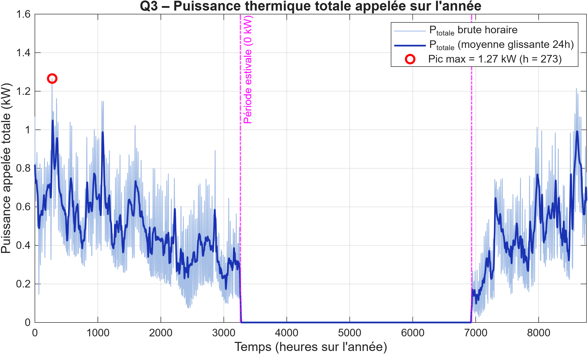

District heating study · MATLAB
MATLAB modelling of a hydronic underfloor heating system controlled by a weather compensation curve.
Dynamic thermal modelling in MATLAB: how do Paris weather data, building thermal mass, and heating-curve controls shape peak thermal demand?

Why this model?
Simulating underfloor heating control and peak thermal loads
In this exercise, a heat source supplies two buildings through a primary distribution loop and hydronic underfloor heating circuits. Heat generation technology is unconstrained and piping losses are neglected, framing the work as a simplified dynamic thermal model rather than a full network design.
The study focuses on demand dynamics: how Paris outdoor temperatures, building envelope properties, and weather-compensated supply temperatures govern indoor comfort and peak power draw over a full year.
Methodology
Hourly dynamic thermal simulation
The MATLAB model couples building heat balances, thermal capacitance, internal/solar gains, outdoor weather data, ventilation losses, and slab heat transfer. A weather compensation curve modulates supply water temperature across all 8,760 hours of a Paris meteorological year.
- Verified numerical convergence and analysed passive free-cooling decay.
- Conducted sensitivity analyses on building thermal inertia and envelope heat-loss coefficients.
- Simulated indoor air temperatures, hydraulic operating regimes, and instantaneous thermal power demand.
- Benchmarked alternative thermostatic control strategies and thermal mass configurations.
Key outcome
Baseline scenario reaches a 1.27 kW peak thermal load
I wrote the MATLAB scripts to benchmark inertia and heat-loss parameters, simulate hydraulic regimes, and test thermostatic control variants—yielding a 1.27 kW peak load under the model’s baseline boundary conditions.
Deliverables
The MATLAB codebase, technical modelling report, and simulation plots document all assumptions and sensitivity runs. Additional details can be shared upon request.
Request project details